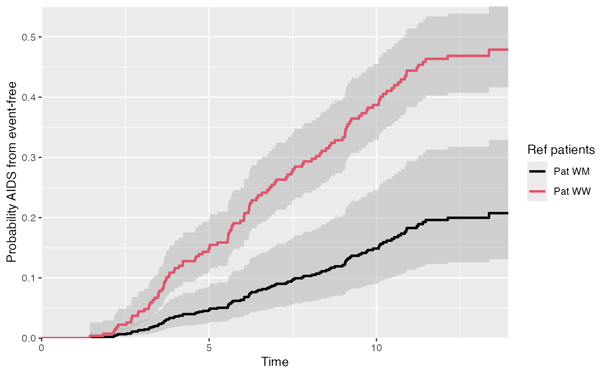

Helper function allow to visualise state probabilities for
different reference patients/covariates. Multiple "probtrans" objects
are thus needed.
vis.multiple.pt( x, from = 1, to, xlab = "Time", ylab, xlim = NULL, ylim = NULL, cols, lwd, labels, conf.int = 0.95, conf.type = c("log", "plain", "none"), legend.title )
| x | A list of |
|---|---|
| from | The starting state from which the probabilities are used to plot
Numeric, as in |
| to | (Numeric) destination state |
| xlab | A title for the x-axis; default is |
| ylab | A title for the y-axis; default is |
| xlim | The x limits of the plot(s), default is range of time |
| ylim | The y limits of the plot(s); if ylim is specified for type="separate", then all plots use the same ylim for y limits |
| cols | A vector specifying colors for the different transitions;
default is a palette from green to red, when type= |
| lwd | The line width, see |
| labels | Character vector labelling each element of x (e.g. label for a reference patient) - so labels = c("Patient 1", "Patient 2") |
| conf.int | Confidence level (%) from 0-1 for probabilities, default is 0.95 (95% CI). Setting to 0 removes the CIs. |
| conf.type | Type of confidence interval - either "log" or "plain" . See function details for details. |
| legend.title | Character - title of legend |
A ggplot object.
Edouard F. Bonneville e.f.bonneville@lumc.nl
#> patnr time status cause ccr5 #> 1 1 9.106 1 AIDS WW #> 2 2 11.039 0 event-free WM #> 3 3 2.234 1 AIDS WW #> 4 4 9.878 2 SI WM #> 5 5 3.819 1 AIDS WW #> 6 6 6.801 1 AIDS WWsi <- aidssi # Prepare transition matrix tmat <- trans.comprisk(2, names = c("event-free", "AIDS", "SI")) # Run msprep si$stat1 <- as.numeric(si$status == 1) si$stat2 <- as.numeric(si$status == 2) silong <- msprep( time = c(NA, "time", "time"), status = c(NA, "stat1", "stat2"), data = si, keep = "ccr5", trans = tmat ) # Run cox model silong <- expand.covs(silong, "ccr5") c1 <- coxph(Surv(time, status) ~ ccr5WM.1 + ccr5WM.2 + strata(trans), data = silong) # 1. Prepare patient data - both CCR5 genotypes WW <- data.frame( ccr5WM.1 = c(0, 0), ccr5WM.2 = c(0, 0), trans = c(1, 2), strata = c(1, 2) ) WM <- data.frame( ccr5WM.1 = c(1, 0), ccr5WM.2 = c(0, 1), trans = c(1, 2), strata = c(1, 2) ) # 2. Make msfit objects msf.WW <- msfit(c1, WW, trans = tmat) msf.WM <- msfit(c1, WM, trans = tmat) # 3. Make probtrans objects pt.WW <- probtrans(msf.WW, predt = 0) pt.WM <- probtrans(msf.WM, predt = 0) # Plot - see vignette for more details vis.multiple.pt( x = list(pt.WW, pt.WM), from = 1, to = 2, conf.type = "log", cols = c(1, 2), labels = c("Pat WW", "Pat WM"), legend.title = "Ref patients" )